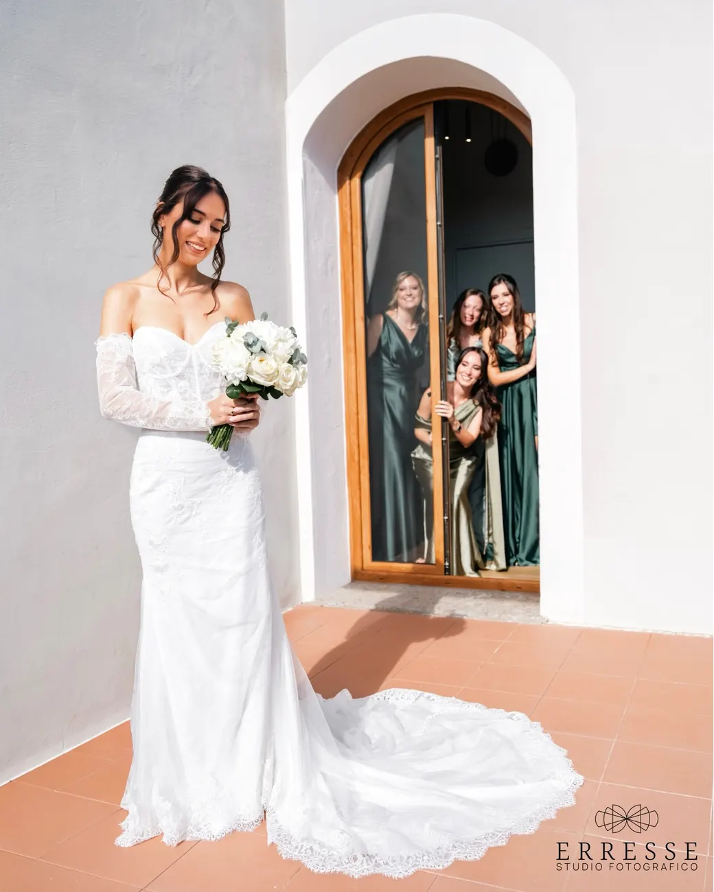
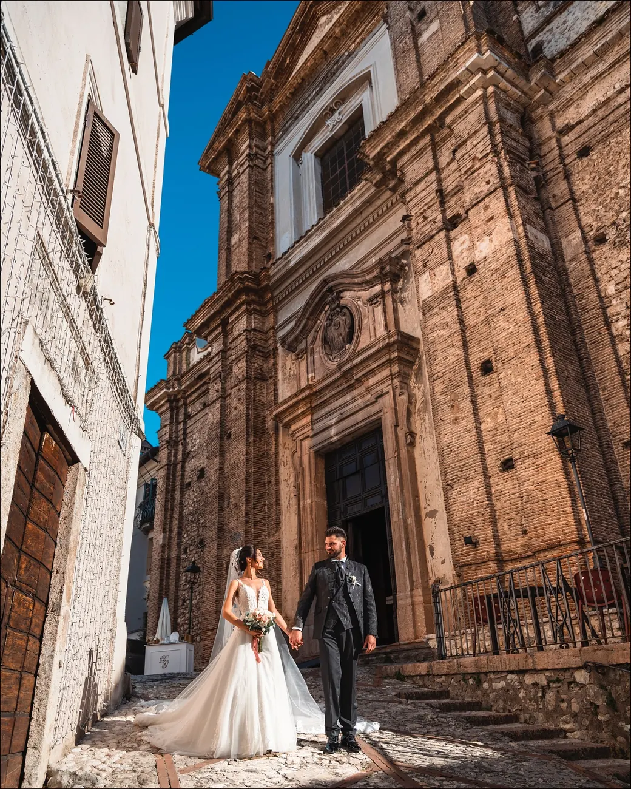
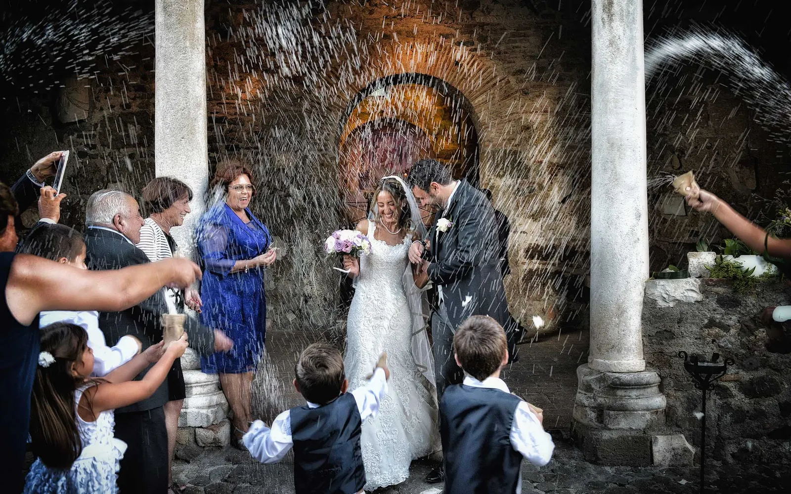
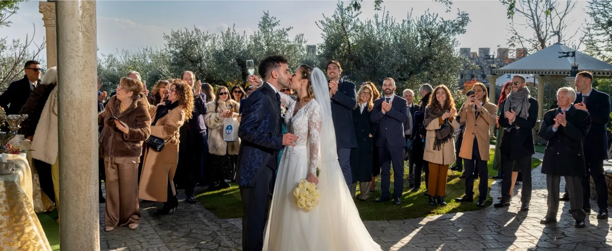
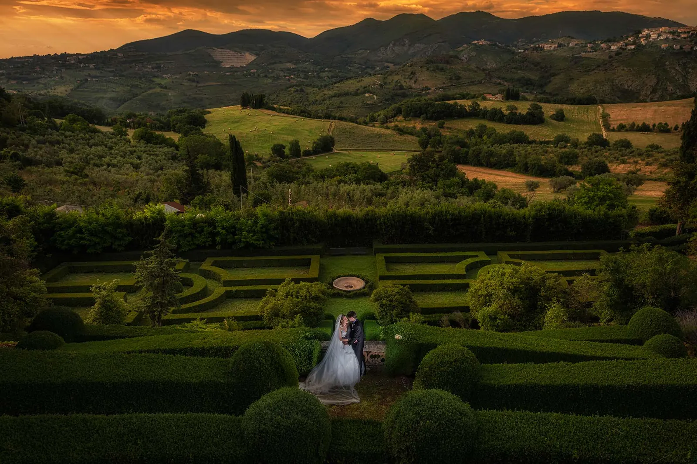
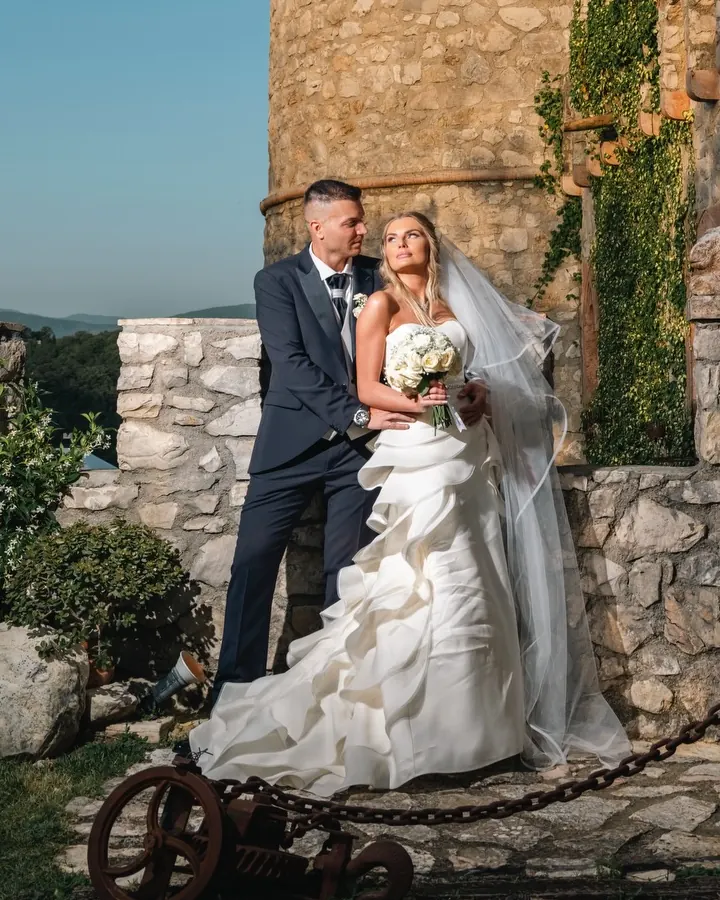

Mattina
Preparativi
Il vestito, le mani, le amiche alla porta. Ci muoviamo piano e lasciamo che succeda.

Foto e video di matrimonio · Roma
Erresse Studio racconta matrimoni dal 1997: foto e video, a Roma e in tutta Italia.
Dal 1997 · Wedding Awards 2023 · In tutta Italia
Fare una fotografia vuol dire allineare la testa, l’occhio e il cuore.
Lasciamo correre la giornata come viene. Poi, quando la luce è giusta, ci fermiamo per il ritratto.
Un matrimonio come lo raccontiamo noi, in quattro capitoli. Tutte le foto sono nostre.
Il vestito, le mani, le amiche alla porta. Ci muoviamo piano e lasciamo che succeda.

L’arrivo, il sì, il riso all’uscita. Vicini quando serve, invisibili quando conta.


Un momento solo per voi due. Qui la spontaneità lascia spazio al ritratto più studiato.
Il primo ballo, i brindisi, gli amici che non stanno mai fermi.

«La spontaneità, a volte, lascia spazio al ritratto più studiato.»Erresse Studio Raccontateci il vostro giorno
Foto e video dallo stesso studio, con lo stesso sguardo. I reel dei matrimoni più recenti sono su Instagram.

Guarda i reel su Instagram
Alcuni luoghi dei nostri ultimi matrimoni. Lavoriamo a Roma, nel Lazio e in tutta Italia.
La prima consulenza è gratuita: ci dite data e luogo, vediamo insieme come raccontarlo.
Oppure chiamate lo studio: 06 860 8221
L’offerta dello studio per le coppie 2026-2027. Ve la spieghiamo nella consulenza gratuita, insieme alle date libere.
Chiedete i dettagli